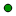

<!doctype html>
<html lang="en">
    <head>
        <meta charset="utf-8">
        <meta http-equiv="X-UA-Compatible" content="IE=edge">
        <meta name="viewport" content="initial-scale=1,user-scalable=no,maximum-scale=1,width=device-width">
        <meta name="mobile-web-app-capable" content="yes">
        <meta name="apple-mobile-web-app-capable" content="yes">
        <link rel="stylesheet" href="css/leaflet.css" />
        <link rel="stylesheet" type="text/css" href="css/qgis2web.css">
        <link rel="stylesheet" href="css/MarkerCluster.css" />
        <link rel="stylesheet" href="css/MarkerCluster.Default.css" />
        <link rel="stylesheet" href="css/Control.OSMGeocoder.css" />
        <link rel="stylesheet" href="css/leaflet-measure.css" />
        <style>
        html, body, #map {
            width: 100%;
            height: 100%;
            padding: 0;
            margin: 0;
        }
        </style>
        <title></title>
    </head>
    <body>
        <div id="map">
        </div>
        <script src="js/qgis2web_expressions.js"></script>
        <script src="js/leaflet.js"></script>
        <script src="js/multi-style-layer.js"></script>
        <script src="js/leaflet-heat.js"></script>
        <script src="js/leaflet-svg-shape-markers.min.js"></script>
        <script src="js/leaflet.rotatedMarker.js"></script>
        <script src="js/OSMBuildings-Leaflet.js"></script>
        <script src="js/leaflet-hash.js"></script>
        <script src="js/leaflet-tilelayer-wmts.js"></script>
        <script src="js/Autolinker.min.js"></script>
        <script src="js/Control.OSMGeocoder.js"></script>
        <script src="js/leaflet-measure.js"></script>
        <script src="js/leaflet.markercluster.js"></script>
        <script src="data/SWMANHOLE0.js"></script>
        <script>
        L.ImageOverlay.include({
            getBounds: function () {
                return this._bounds;
            }
        });
        var map = L.map('map', {
            zoomControl:true, maxZoom:28, minZoom:1
        }).fitBounds([[47.703664399,-122.225089957],[47.7070095826,-122.216736202]]);
        var hash = new L.Hash(map);
        map.attributionControl.addAttribution('<a href="https://github.com/tomchadwin/qgis2web" target="_blank">qgis2web</a>');
        var measureControl = new L.Control.Measure({
            primaryLengthUnit: 'feet',
            secondaryLengthUnit: 'miles',
            primaryAreaUnit: 'sqfeet',
            secondaryAreaUnit: 'sqmiles'
        });
        measureControl.addTo(map);
        var bounds_group = new L.featureGroup([]);
        var basemap0 = L.tileLayer('http://{s}.tile.openstreetmap.org/{z}/{x}/{y}.png', {
            attribution: '&copy; <a href="http://openstreetmap.org">OpenStreetMap</a> contributors,<a href="http://creativecommons.org/licenses/by-sa/2.0/">CC-BY-SA</a>',
            maxZoom: 28
        });
        basemap0.addTo(map);
        function setBounds() {
        }
        function geoJson2heat(geojson, weight) {
          return geojson.features.map(function(feature) {
            return [
              feature.geometry.coordinates[1],
              feature.geometry.coordinates[0],
              feature.properties[weight]
            ];
          });
        }
        function pop_SWMANHOLE0(feature, layer) {
            var popupContent = '<table>\
                    <tr>\
                        <th scope="row">OWNERSHIP</th>\
                        <td>' + (feature.properties['OWNERSHIP'] !== null ? Autolinker.link(String(feature.properties['OWNERSHIP'])) : '') + '</td>\
                    </tr>\
                    <tr>\
                        <td colspan="2"><strong>CB_TYPE</strong><br />' + (feature.properties['CB_TYPE'] !== null ? Autolinker.link(String(feature.properties['CB_TYPE'])) : '') + '</td>\
                    </tr>\
                </table>';
            layer.bindPopup(popupContent);
        }

        function style_SWMANHOLE0_0() {
            return {
                pane: 'pane_SWMANHOLE0',
                radius: 4.0,
                opacity: 1,
                color: 'rgba(0,0,0,1.0)',
                dashArray: '',
                lineCap: 'butt',
                lineJoin: 'miter',
                weight: 1,
                fillOpacity: 1,
                fillColor: 'rgba(1,148,1,1.0)',
            }
        }
        map.createPane('pane_SWMANHOLE0');
        map.getPane('pane_SWMANHOLE0').style.zIndex = 400;
        map.getPane('pane_SWMANHOLE0').style['mix-blend-mode'] = 'normal';
        var layer_SWMANHOLE0 = new L.geoJson(json_SWMANHOLE0, {
            attribution: '<a href=""></a>',
            pane: 'pane_SWMANHOLE0',
            onEachFeature: pop_SWMANHOLE0,
            pointToLayer: function (feature, latlng) {
                var context = {
                    feature: feature,
                    variables: {}
                };
                return L.circleMarker(latlng, style_SWMANHOLE0_0(feature))
            },
        });
        bounds_group.addLayer(layer_SWMANHOLE0);
        map.addLayer(layer_SWMANHOLE0);
        map.on("zoomend", function(e) {
            if (map.getZoom() <= 19 && map.getZoom() >= 17) {
                map.addLayer(layer_SWMANHOLE0);
            } else if (map.getZoom() > 19 || map.getZoom() < 17) {
                map.removeLayer(layer_SWMANHOLE0);
            }
        });
            if (map.getZoom() <= 19 && map.getZoom() >= 17) {
                map.addLayer(layer_SWMANHOLE0);
            } else if (map.getZoom() > 19 || map.getZoom() < 17) {
                map.removeLayer(layer_SWMANHOLE0);
            }
        var osmGeocoder = new L.Control.OSMGeocoder({
            collapsed: false,
            position: 'topright',
            text: 'Search',
        });
        osmGeocoder.addTo(map);
        var baseMaps = {};
        L.control.layers(baseMaps,{' SW_MANHOLE': layer_SWMANHOLE0,}).addTo(map);
        setBounds();
        </script>
    </body>
</html>
